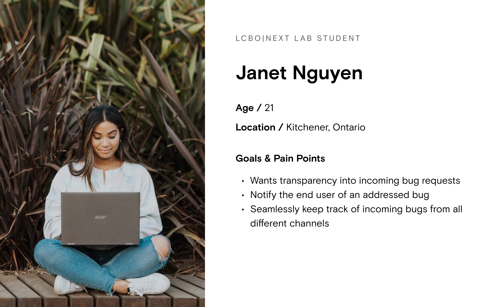
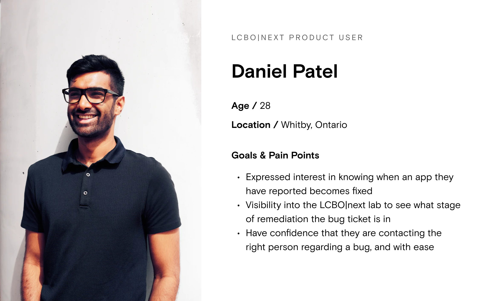

LCBO Internship
Keeping our innovations bug-free
Company
LCBO|Next Innovation Lab
Role
1 designer (me), 1 PM, 2 developers
Timeline
Feb - Apr 2021
Tools
Figma
Background
What is LCBO|next?
The Liquor Control Board of Ontario (LCBO) is a Canadian Crown corporation responsible for selling and distributing alcoholic beverages across Ontario. The innovation lab is responsible for exploring new technologies and enhancing the LCBO’s technology initiatives to solve the unique problems customers or business partners face.
Bug Detection
Despite managing a multitude of products in production, there was no formal process for handling any complications that may arise.
Assumptions
Having an easy-to-use and easily accessible method of communication between stakeholders and the LCBO|next team would encourage more frequent communication with higher levels of quality
Being able to holistically receive, track, and monitor incoming bugs or enhancement requests in one place will ensure that all requests are either addressed or closed with transparent and visible justification.
Having a platform with data that persisted past co-op terms would also provide value in providing context to incoming students and prevent the loss of great ideas between co-op terms.
Constraints
Time
Being confined to a four-month work term, we were determined to at least get a bronze phase of the project out the door before the term ended so that the new co-op students could pick up the project in an easily comprehensible state.
Work From Home
This meant we couldn’t conduct in-person user interviews, usability tests, or concierge tests, which could have provided us with some invaluable insights. Hosting these sessions remotely may have also influenced the transparency or accuracy of our results/findings, but we had to make the most of the cards we were dealt.
User Research - LCBO Customers
Most users are confused as to who to contact when they encounter a bug on LCBO|next applications
Most users external to the company have not been notified of a bug being remediated
Bugs are not often encountered, but discovered bugs are not remediated for months after being reported
User Personas - LCBO|Next Team
There is little visibility from the developer perspective on incoming bugs
Numerous bugs are being tracked at any given time, and more than 2 hours per week are being spent on avoidable communication regarding these bugs
There were seven 30 minute phone calls and more than 40 back-and-forth emails regarding bugs in the span of a few weeks
User Personas
After conducting 8 user interviews, we compiled all our notes and conclusions and created two distinct personas. The personas below are simplified versions of the personas we had developed.
 
Journey Map
Using a combination of the newly-made personas and the insights we gained from the user interviews, we were able to visualize a typical customer journey and create a journey map. Typically, this would've also been supplemented with findings from an in-person concierge test, but with the ongoing pandemic, we had to make do with what we had.


Why not Freshdesk?
Although Freshdesk is widely accepted by companies in the technology industry, we concluded that it was not right for our needs.
For a company to use FreshDesk, customers must email a designated support email (e.g. support@lcbo.com). Leaving an LCBO|next app to write an email could discourage users from submitting queries, so we wanted to make the experience as seamless as possible and embed the query-submitting functionality directly into all of our LCBO|next apps.
Product Features
Allow LCBO customers to submit bugs, suggestions, and feedback
Update LCBO customers on ticket progress
A way for the internal team to view and manage incoming tickets
Seamless communication between both parties
Decision 1
Allow app to be easily accessible so users can immediately give feedback after their experience
One critical aspect of the customer facing side was to give users the ability to provide feedback at any point during their experience. If it was an external link or app, users may forget or not bother to send feedback. To do this, we added a pop up icon to the bottom right of every LCBO app.

Screens are blurred for privacy reasons.
Decision 2
Showing one question at a time
To create a more delightful experience, the feedback section only shows one question at a time to eliminate clutter and overwhelmingness.

Decision 3
Prioritize constant feedback and transparent communication to build trust with users
Trust between a company and its users is vital for delightful product experiences. Since this problem space revolved around feedback and bugs, it was even more important to provide seamless communication and updates to the user. This can be seen in the app's micro-interactions and chat function.

Decision 4
Allow the internal team to directly chat with customers within the app
Not only does the chat function enhance communication with the customer, it also reduces email clutter for the internal team. All processes are in one place.

Branding
Next Steps
Conduct usability testing of our high-fidelity designs to validate our designs and confirm whether the user flow is intuitive or not
Conduct UAT with our intended users to ensure they could dive into the experience with no surprises
Launch and monitor our product with Google Analytics or Amplitude to monitor user trends and inform a feature list for the product’s next subsequent iterations
Conclusions
Overall, my experience at the LCBO Innovation Lab was beyong valuable. In four short months, I was fortunate enough to learn about and lead the product design process. Through this, I truly believe I found my strive as a product designer and developed confidence in my abilities. I was fortunate enough to have an amazing supervisor in Danny Ho, the Director of Innovation, who supported me the whole way and was always open to answer any questions that I had.